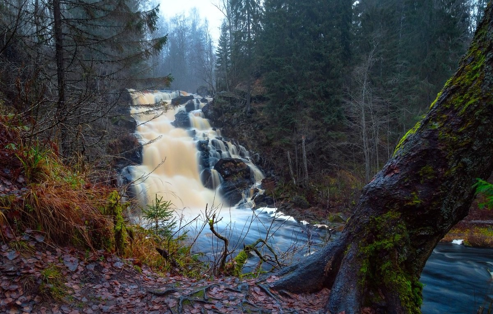
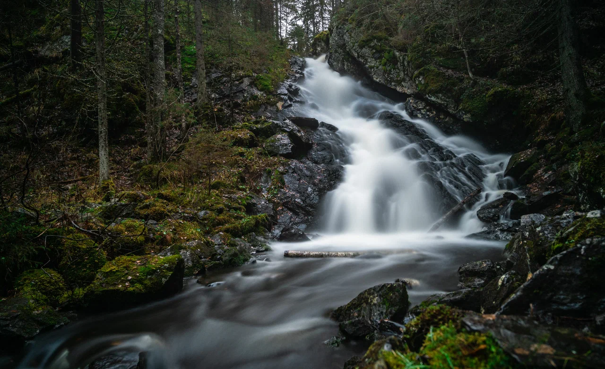

мы выбрали три лучших водопада Карелии, чтобы вы могли узнать о них больше и спланировать своё путешествие лучше
три лучших водопада Карелии

водопад юканкоски
самый высокий водопад Северного Приладожья. В изданном в 1927 году в Хельсинки геологическом атласе Финляндии приводится информация о водопаде Юканкоски как о водопаде высотой 17 метров. Пожалуй, самый красивый в Карелии.

водопад роскелакоски
другое название — молочный. Так его прозвали за белый цвет воды, который не характерен для карельских рек, они по большей части бурые. Высота скал, с которой падает вода, от 10 до 15 метров. В районе водопада немноголюдно и очень красиво.
водопад воицкий падун
это водопад в Сегежском районе возле поселка Надвоицы. Раньше его высота достигала семи метров, а водный поток был мощнее. На месте водопада был рудник, в котором добывали золото. Тем не менее, сегодня он по-прежнему заслуживает посещения.